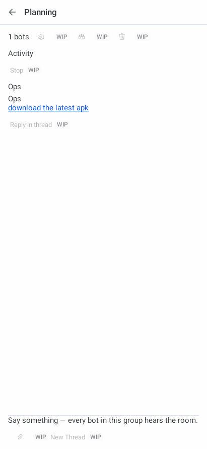
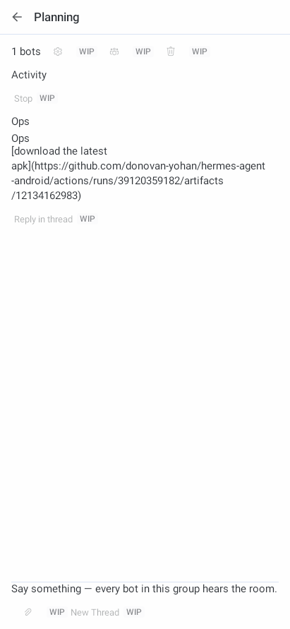
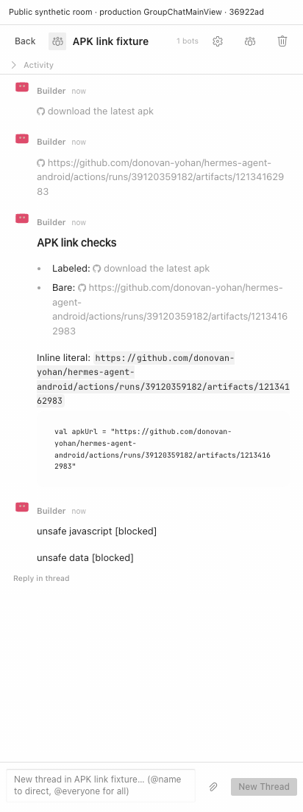
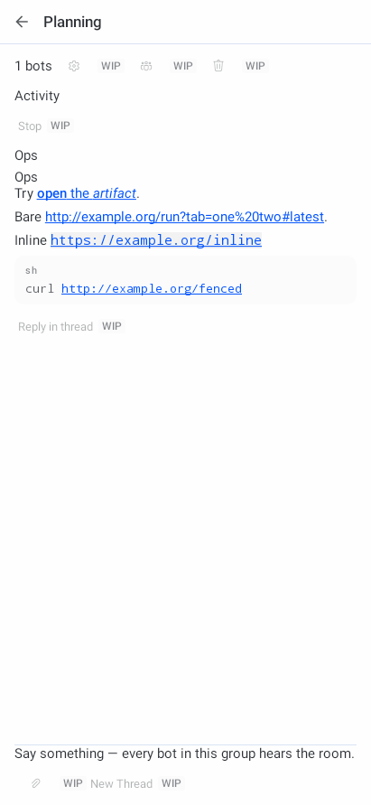

Desktop authority 36922ad064d65dcf25f8f48df81e1ccf9a55de67.
Android starts from 2923f0f2b3d37b7c8bab5cd0edd6173615c64df1.
The exact public download message is a Markdown link, not a file attachment.
Desktop is the production GroupChatMainView mounted from its real workspace callback in a synthetic browser fixture. Android is the production GroupsScreen drawn by native Robolectric Canvas at API 34, not a physical phone or installed-app capture. Only message-body behavior is compared. Desktop is Mono light; Android uses the default Nous light appearance. These are not theme-parity captures.
[download the latest apk](https://github.com/donovan-yohan/hermes-agent-android/actions/runs/39120359182/artifacts/12134162983)




| Aspect | Result and boundary |
|---|---|
| Exact label and destination | Desktop DOM and trusted touch routing assertions; Android production text-layout annotation and character-position tap assertions. The visible label is not replaced by the URL. |
| Code URLs | Intentional mobile adaptation. Android makes valid web URLs in inline and fenced code tappable. Desktop structured code remains literal at this pin. |
| Copy and actions | No new product strings, action order changes or enabled group mutations. Existing disabled WIP controls remain. No quote-reply capability is invented. |
| Layout | The label is visible without clipping or overlap in the captured state. Native spacing and platform typography differ. This report does not certify the whole group surface. |
| Safety | Only existing HTTP/HTTPS browser actions are reused. No plugin directive contributions, HTML execution, file retrieval or automatic navigation is added. |
| Not proven | No GitHub download, authentication, APK install, physical touch/IME, TalkBack or live-room integration. A successful URI handoff is not proof of any of these. |
Packet notes and reproduction, Desktop source/capture manifest, Android source manifest, Published file digests.